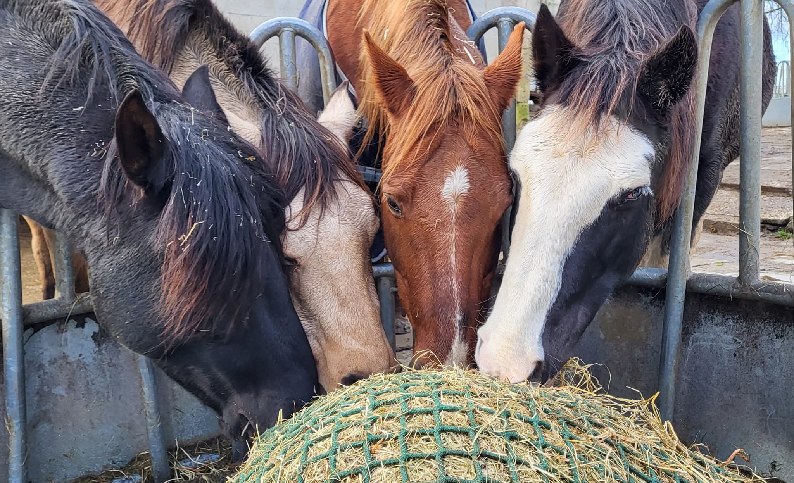
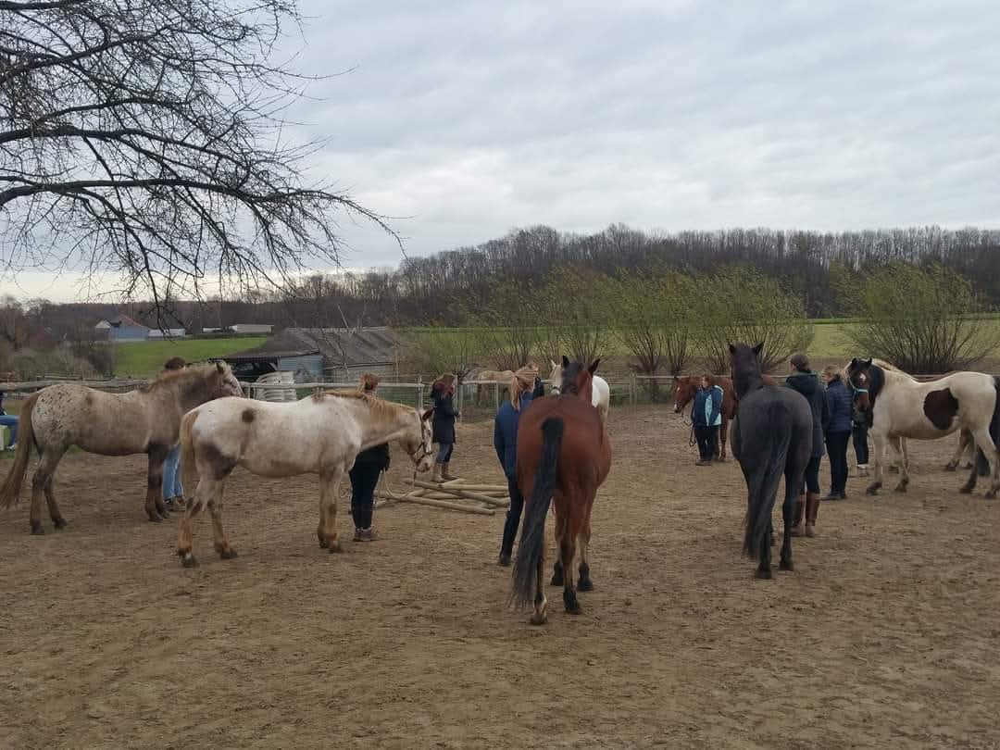

Passie voor Natuurlijk Paardenhouden
Sinds 2016 zijn wij geen traditioneel manegebedrijf meer. Deze beslissing kwam voort uit een diep verlangen om paarden te houden op een manier die echt bij hun natuur past. Met meer dan 20 jaar ervaring in het natuurlijk paardenhouden, hebben wij ons volledig toegelegd op de uitbreiding van ons natuurlijk paardenpension en het geven van workshops.
Wij zijn echte praktijkmensen. Alles wat we delen tijdens onze cursussen en kennismakingsmiddagen komt voort uit de dagelijkse praktijk met onze eigen kudde op onze boerderij in Hees-Bilzen.
Onze weg naar Spirithorses
Onze reis begon lang geleden. Herhaaldelijk kregen wij de vraag of we onze kennis over alle aspecten van het natuurlijk paardenhouden wilden delen. Dit heeft geleid tot het huidige Spirithorses: een plek waar we niet alleen paarden huisvesten, maar ook mensen inspireren om anders naar hun paard te kijken.
Als gecertificeerde bekappers en ervaren paardenhouders, begeleiden we eigenaren bij de overstap naar een ijzerloos en bitloos leven. We vertellen hierbij over de praktijk van meer dan 20 jaar ervaring. Het doel is altijd een paard dat zowel fysiek als mentaal gezond en gelukkig is.

De Kudde: Onze Grootste Leermeesters

Onze paarden leven in een stabiele groep waar kuddegedrag en lichaamstaal de boventoon voeren. Zij laten ons elke dag zien hoe belangrijk sociale interactie, vrije beweging en de juiste voeding zijn. In ons natuurlijk paardenpension krijgen ook de pensionpaarden de kans om onderdeel te worden van dit natuurlijke evenwicht.
Of het nu gaat om het paard als kuddedier, groepsgedrag of gezondheidsleer; de paarden vormen de kern van ons werk. Tijdens onze kennismakingsmiddagen vertoeven we de hele middag buiten op het terrein rondom de paarden om deze dynamiek van dichtbij te ervaren.
Of het nu gaat om het paard als kuddedier, groepsgedrag of gezondheidsleer; de paarden vormen de kern van ons werk. Tijdens onze kennismakingsmiddagen vertoeven we de hele middag buiten op het terrein rondom de paarden om deze dynamiek van dichtbij te ervaren.
Kom kennismaken
Wil je meer weten over ons team, onze paarden of onze visie? Je bent van harte welkom op een van onze infomiddagen of workshops rondom diverse thema's.
Blijf op de hoogte: Volg ons ook op
Facebook